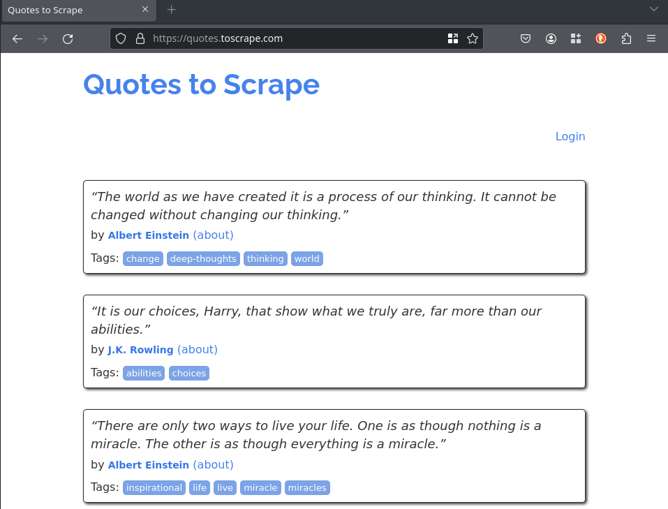
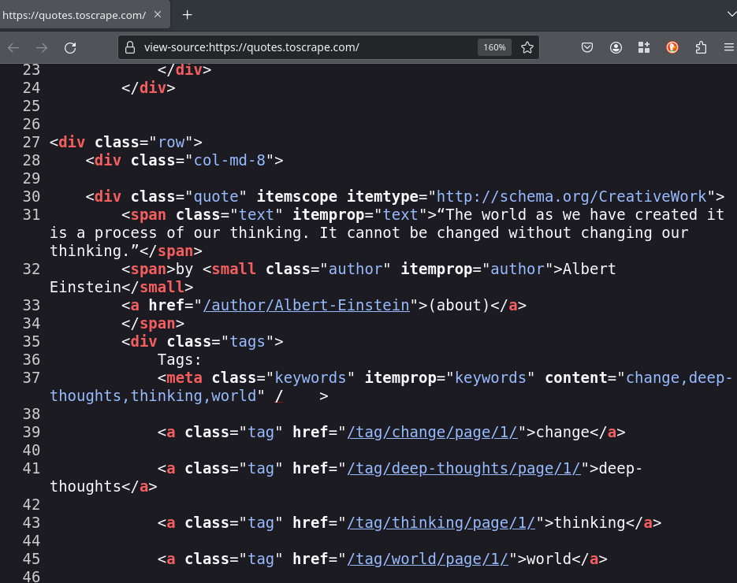
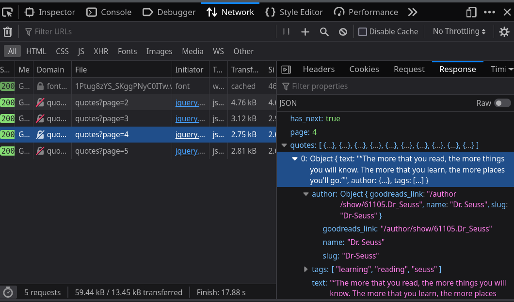

class: center middle # Gathering data from the web using Python ### EuroPython 2023 - 18 / 07 / 2023 --- # Agenda - Web scraping fundamentals üßë‚Äçüè´ - Scrapy basic concepts üßë‚Äçüè´ - Scraping a basic HTML page üë©‚Äçüíª üßë‚Äçüíª - Scraping Javascript generated content (external API) üë©‚Äçüíª üßë‚Äçüíª - Scraping Javascript generated content (data into HTML) üë©‚Äçüíª üßë‚Äçüíª - Proxies and headless browsers üßë‚Äçüè´ - Being polite and not gathering data you shouldn't gather üßë‚Äçüè´ - Q&A üßë‚Äçüè´ üë©‚Äçüíª üßë‚Äçüíª --- # Renne Rocha  - Senior Python Developer and Web Scraping consultant - Maintainer of **Querido Diário** (https://queridodiario.ok.org.br/) - Maintainer of **Spidermon** (https://spidermon.readthedocs.io/) - Co-founder of **Laborat√≥rio Hacker de Campinas** (https://lhc.net.br) - @rennerocha@chaos.social üêò - @rennerocha (other social networks) --- # Why (automatically) gather data from the web? - We need data to make decisions - Gather structured data from unstructured sources - Quantity of data available can be overwhelming and time-consuming to navigate through manually --- # Common Use Cases - Machine learning training data - Government data - Price inteligence - Brand monitoring - Consumer sentiment - Competitors‚Äô product data - Real estate data --- # Common tools in Python ecosystem - **requests** (https://pypi.org/project/requests/) - **Beautiful Soup** (https://pypi.org/project/beautifulsoup4/) - **parsel** (https://pypi.org/project/parsel/) - **Selenium** (https://www.selenium.dev/) - **Scrapy** (https://scrapy.org/) --- # EuroPython 2023 Session Titles ``` python # code/ep2023-requests.py import requests from parsel import Selector start_urls = [ "https://ep2023.europython.eu/sessions", "https://ep2023.europython.eu/tutorials", ] for url in start_urls: response = requests.get(url) content = Selector(text=response.text) for session in content.css("h2 a::text").getall(): print(session) ``` --- # EuroPython 2023 Session Titles ``` $ python ep2023-requests.py The CPU in your browser: WebAssembly demystified Writing a Python interpreter from scratch, in half an hour. Rust for Python data engineers GraphQL as an umbrella for microservices Packaging Python Apps with Briefcase Face Off: Brute-force attack on Biometrical-databases Food For Rabbits: Celery From Zero to Hero Building Secure and Customized REST APIs with Django and DRF Rotating DB Passwords Without Breaking Your Django Server How Python can help victims of violence DuckDB: Bringing analytical SQL directly to your Python shell HPy: The Future of Python Native Extensions Career Building Through Open Source & Community Participation From Jupyter Notebooks to a Python Package: The Best of Both Worlds Orchestrating Python Workflows in Apache Airflow Upgrading Django - from legacy to latest Solving Data Problems in Management Accounting Quantify Self Responding to Earthquakes using Machine Learning and Racing through Time Optimizing Your CI Pipelines BDD - how to make it work? (...) ``` --- # What if? - You have thousands of URLs for the same (or different) domain? - You need to export data in some specific format and schema? - You need to manage the rate to avoid degrating your target server? - You need to monitor the execution of your web crawlers? - You need to run the same web crawler multiple times? --- # Why **Scrapy**?  - Application framework for crawling web sites - Batteries included (HTML parsing, asynchronous, data pipeline, sessions, data exporting, etc) - Extensible (middlewares, downloaders, extensions) - Open Source https://scrapy.org/ --- # Installing (Linux) ``` $ git clone git@github.com:rennerocha/europython-2023-gathering-data-tutorial.git ep2023-tutorial $ cd ep2023-tutorial $ python3 -m venv .venv $ source .venv/bin/activate $ cd code $ pip install -r requirements (...) Many lines installing a lot of things $ scrapy version Scrapy 2.9.0 ``` https://bit.ly/ep2023-gathering-data ---  https://docs.scrapy.org/en/latest/_images/scrapy_architecture_02.png --- # Spiders Classes that define how a certain site will be scraped - How to perform the crawl (i.e. follow links) - How to extract structured data from the pages (i.e. scraping items) - Usually one for each domain --- # Spiders ```python # code/ep2023.py import scrapy class EuroPython2023Spider(scrapy.Spider): name = "europython" start_urls = [ "https://ep2023.europython.eu/sessions", "https://ep2023.europython.eu/tutorials", ] def parse(self, response): for session in response.css("h2 a::text").getall(): yield {"title": session} ``` --- # Spiders ```python # code/ep2023.py import scrapy *class EuroPython2023Spider(scrapy.Spider): name = "europython" start_urls = [ "https://ep2023.europython.eu/sessions", "https://ep2023.europython.eu/tutorials", ] def parse(self, response): for session in response.css("h2 a::text").getall(): yield {"title": session} ``` --- # Spiders ```python # code/ep2023.py import scrapy class EuroPython2023Spider(scrapy.Spider): * name = "europython" start_urls = [ "https://ep2023.europython.eu/sessions", "https://ep2023.europython.eu/tutorials", ] def parse(self, response): for session in response.css("h2 a::text").getall(): yield {"title": session} ``` --- # Spiders ```python # code/ep2023.py import scrapy class EuroPython2023Spider(scrapy.Spider): name = "europython" * start_urls = [ * "https://ep2023.europython.eu/sessions", * "https://ep2023.europython.eu/tutorials", * ] def parse(self, response): for session in response.css("h2 a::text").getall(): yield {"title": session} ``` --- # Spiders ```python # code/ep2023.py import scrapy class EuroPython2023Spider(scrapy.Spider): name = "europython" * def start_requests(self): * initial_urls = [ * "https://ep2023.europython.eu/sessions", * "https://ep2023.europython.eu/tutorials", * ] * for url in initial_urls: * yield scrapy.Request(url) def parse(self, response): for session in response.css("h2 a::text").getall(): yield {"title": session} ``` --- # Spiders ```python # code/ep2023.py import scrapy class EuroPython2023Spider(scrapy.Spider): name = "europython" start_urls = [ "https://ep2023.europython.eu/sessions", "https://ep2023.europython.eu/tutorials", ] * def parse(self, response): * for session in response.css("h2 a::text").getall(): * yield {"title": session} ``` --- class: center, middle # Running the spider --- ``` $ scrapy runspider ep2023-scrapy.py 2023-06-28 20:26:47 [scrapy.utils.log] INFO: Scrapy 2.9.0 started (bot: scrapybot) 2023-06-28 20:26:47 [scrapy.utils.log] INFO: Versions: lxml 4.9.2.0, libxml2 2.9.14, cssselect 1.2.0, parsel 1.8.1, w3lib 2.1.1, Twisted 22.10.0, Python 3.11.3 (main, May 30 2023, 17:18:52) [GCC 11.3.0], pyOpenSSL 23.2.0 (OpenSSL 3.1.1 30 May 2023), cryptography 41.0.1, Platform Linux-5.15.0-75-generic-x86_64-with-glibc2.35 2023-06-28 20:26:47 [scrapy.crawler] INFO: Overridden settings: {'HTTPCACHE_ENABLED': '0', 'SPIDER_LOADER_WARN_ONLY': True} (...) 2023-06-28 20:26:48 [scrapy.core.engine] INFO: Spider opened 2023-06-28 20:26:48 [scrapy.extensions.logstats] INFO: Crawled 0 pages (at 0 pages/min), scraped 0 items (at 0 items/min) 2023-06-28 20:26:48 [scrapy.extensions.telnet] INFO: Telnet console listening on 127.0.0.1:6023 2023-06-28 20:26:48 [scrapy.core.engine] DEBUG: Crawled (200) <GET https://ep2023.europython.eu/sessions> (referer: None) 2023-06-28 20:26:48 [scrapy.core.engine] DEBUG: Crawled (200) <GET https://ep2023.europython.eu/tutorials> (referer: None) 2023-06-28 20:26:48 [scrapy.core.scraper] DEBUG: Scraped from <200 https://ep2023.europython.eu/sessions> {'title': 'The CPU in your browser: WebAssembly demystified'} 2023-06-28 20:26:48 [scrapy.core.scraper] DEBUG: Scraped from <200 https://ep2023.europython.eu/sessions> {'title': 'GraphQL as an umbrella for microservices'} 2023-06-28 20:26:48 [scrapy.core.scraper] DEBUG: Scraped from <200 https://ep2023.europython.eu/tutorials> {'title': 'Food For Rabbits: Celery From Zero to Hero'} 2023-06-28 20:26:48 [scrapy.core.scraper] DEBUG: Scraped from <200 https://ep2023.europython.eu/sessions> {'title': 'Asyncio without Asyncio'} 2023-06-28 20:26:48 [scrapy.core.scraper] DEBUG: Scraped from <200 https://ep2023.europython.eu/tutorials> {'title': 'Develop your Python cloud applications offline with LocalStack'} (...) 2023-06-28 20:26:48 [scrapy.core.engine] INFO: Closing spider (finished) 2023-06-28 20:26:48 [scrapy.statscollectors] INFO: Dumping Scrapy stats: 2023-06-28 20:26:48 [scrapy.core.engine] INFO: Spider closed (finished) ``` --- ``` $ scrapy runspider ep2023-scrapy.py -s HTTPCACHE_ENABLED=1 2023-06-28 20:30:15 [scrapy.utils.log] INFO: Scrapy 2.9.0 started (bot: scrapybot) 2023-06-28 20:30:15 [scrapy.utils.log] INFO: Versions: lxml 4.9.2.0, libxml2 2.9.14, cssselect 1.2.0, parsel 1.8.1, w3lib 2.1.1, Twisted 22.10.0, Python 3.11.3 (main, May 30 2023, 17:18:52) [GCC 11.3.0], pyOpenSSL 23.2.0 (OpenSSL 3.1.1 30 May 2023), cryptography 41.0.1, Platform Linux-5.15.0-75-generic-x86_64-with-glibc2.35 2023-06-28 20:30:15 [scrapy.crawler] INFO: Overridden settings: {'HTTPCACHE_ENABLED': '1', 'SPIDER_LOADER_WARN_ONLY': True} (...) 2023-06-28 20:30:16 [scrapy.core.engine] INFO: Spider opened 2023-06-28 20:30:16 [scrapy.extensions.logstats] INFO: Crawled 0 pages (at 0 pages/min), scraped 0 items (at 0 items/min) 2023-06-28 20:30:16 [scrapy.extensions.httpcache] DEBUG: Using filesystem cache storage in .scrapy/httpcache 2023-06-28 20:30:16 [scrapy.extensions.telnet] INFO: Telnet console listening on 127.0.0.1:6023 2023-06-28 20:30:16 [scrapy.core.engine] DEBUG: Crawled (200) <GET https://ep2023.europython.eu/sessions> (referer: None) ['cached'] 2023-06-28 20:30:16 [scrapy.core.engine] DEBUG: Crawled (200) <GET https://ep2023.europython.eu/tutorials> (referer: None) ['cached'] 2023-06-28 20:30:16 [scrapy.core.scraper] DEBUG: Scraped from <200 https://ep2023.europython.eu/sessions> {'title': 'The CPU in your browser: WebAssembly demystified'} 2023-06-28 20:30:16 [scrapy.core.scraper] DEBUG: Scraped from <200 https://ep2023.europython.eu/sessions> {'title': 'Writing a Python interpreter from scratch, in half an hour.'} 2023-06-28 20:30:16 [scrapy.core.scraper] DEBUG: Scraped from <200 https://ep2023.europython.eu/sessions> {'title': 'Rust for Python data engineers'} (...) ``` ``` $ ls -la .scrapy total 12 drwxrwxr-x 3 renne renne 4096 jun 28 20:25 . drwxrwxr-x 4 renne renne 4096 jun 28 20:25 .. drwxrwxr-x 3 renne renne 4096 jun 28 20:25 httpcache ``` --- class: center, middle # Parsing Data --- # CSS Selectors ### https://www.w3.org/TR/CSS2/selector.html # XPath ### https://www.w3.org/TR/xpath/all/ --- # Parsing Data ``` # code/parsing-data-css.py import scrapy class EuroPython2023Spider(scrapy.Spider): name = "europython" start_urls = [ "https://ep2023.europython.eu/sessions", "https://ep2023.europython.eu/tutorials", ] def parse(self, response): sessions = response.css(".mt-12") for session in sessions: yield { "title": session.css("h2 a::text").get(), "presenter": session.css("p a::text").get(), } ``` --- # Parsing Data ``` # code/parsing-data-css.py import scrapy class EuroPython2023Spider(scrapy.Spider): name = "europython" start_urls = [ "https://ep2023.europython.eu/sessions", "https://ep2023.europython.eu/tutorials", ] def parse(self, response): * sessions = response.css(".mt-12") for session in sessions: yield { * "title": session.css("h2 a::text").get(), * "presenter": session.css("p a::text").get(), } ``` ### CSS Selectors --- # Parsing Data ``` # code/parsing-data-xpath.py import scrapy class EuroPython2023Spider(scrapy.Spider): name = "europython" start_urls = [ "https://ep2023.europython.eu/sessions", "https://ep2023.europython.eu/tutorials", ] def parse(self, response): * sessions = response.xpath("//div[contains(@class, 'mt-12')]") for session in sessions: yield { * "title": session.xpath("./h2/a/text()").get(), * "presenter": session.xpath("./p/a/text()").get(), } ``` ### XPath --- # Parsing Data ``` # code/parsing-data-mixed.py import scrapy class EuroPython2023Spider(scrapy.Spider): name = "europython" start_urls = [ "https://ep2023.europython.eu/sessions", "https://ep2023.europython.eu/tutorials", ] def parse(self, response): * sessions = response.css(".mt-12") for session in sessions: yield { * "title": session.xpath("./h2/a/text()").get(), * "presenter": session.xpath("./p/a/text()").get(), } ``` ### You are not limited to just one kind of selector --- # CSS Selectors Examples ``` response.css("h1") ``` ``` response.css("ul#offers") ``` ``` response.css(".product") ``` ``` response.css("ul#offers .product a::attr(href)") ``` ``` response.css("ul#offers .product *::text") ``` ``` response.css("ul#offers .product p::text") ``` --- # XPath Examples ``` response.xpath("//h1") ``` ``` response.xpath("//h1[2]") ``` ``` response.xpath("//ul[@id='offers']") ``` ``` response.xpath("//li/a/@href") ``` ``` response.xpath("//li//text()") ``` ``` response.xpath("//li[@class='ad']/following-sibling::li") ``` --- # Exporting Results ``` $ scrapy runspider ep2023-scrapy.py ``` --- # Exporting Results ``` $ scrapy runspider ep2023-scrapy.py ``` ``` $ scrapy runspider ep2023-scrapy.py -o results.csv ``` --- # Exporting Results ``` $ scrapy runspider ep2023-scrapy.py ``` ``` $ scrapy runspider ep2023-scrapy.py -o results.csv ``` ``` $ scrapy runspider ep2023-scrapy.py -o results.json ``` ``` $ scrapy runspider ep2023-scrapy.py -o results.jl ``` ``` $ scrapy runspider ep2023-scrapy.py -o results.xml ``` ### You can export in your own custom format if you like... https://docs.scrapy.org/en/latest/topics/feed-exports.html#topics-feed-exports --- class: center, middle  --- class: center, middle We will use http://toscrape.com/, a sandbox containing fictional websites with a simplified version of real world challenges we find during web scraping tasks. --- # Exercise 1 **Target:** https://quotes.toscrape.com/ On this page, you will find a collection of quotes along with their respective authors. Each quote is accompanied by a link that directs you to a dedicated page providing additional details about the author, the quote itself, and a list of associated tags. Your task is to extract all of this information and export it into a JSON lines file. ---  ---  --- # Exercise 1 **Target:** https://quotes.toscrape.com/ On this page, you will find a collection of quotes along with their respective authors. Each quote is accompanied by a link that directs you to a dedicated page providing additional details about the author, the quote itself, and a list of associated tags. Your task is to extract all of this information and export it into a JSON lines file. **TIP**: your parse method can be used to yield items or schedule new requests for later processing. ``` # if callback is not provided, the default is self.parse scrapy.Request("https://someurl.com", callback=self.parse_someurl) ``` --- ``` # code/exercise-1.py import scrapy class QuotesSpider(scrapy.Spider): name = "quotes" allowed_domains = ["quotes.toscrape.com"] start_urls = ["https://quotes.toscrape.com"] def parse(self, response): quotes = response.css(".quote") for quote in quotes: yield { "quote": quote.css(".text::text").get(), "author": quote.css(".author::text").get(), "author_url": response.urljoin( quote.css("span a::attr(href)").get() ), "tags": quote.css(".tag *::text").getall(), } yield scrapy.Request( response.urljoin(response.css(".next a::attr(href)").get()) ) ``` --- ``` # code/exercise-1.py import scrapy *class QuotesSpider(scrapy.Spider): * name = "quotes" * allowed_domains = ["quotes.toscrape.com"] * start_urls = ["https://quotes.toscrape.com"] def parse(self, response): quotes = response.css(".quote") for quote in quotes: yield { "quote": quote.css(".text::text").get(), "author": quote.css(".author::text").get(), "author_url": response.urljoin( quote.css("span a::attr(href)").get() ), "tags": quote.css(".tag *::text").getall(), } yield scrapy.Request( response.urljoin(response.css(".next a::attr(href)").get()) ) ``` --- ``` # code/exercise-1.py import scrapy class QuotesSpider(scrapy.Spider): name = "quotes" allowed_domains = ["quotes.toscrape.com"] start_urls = ["https://quotes.toscrape.com"] * def parse(self, response): * quotes = response.css(".quote") * for quote in quotes: * yield { * "quote": quote.css(".text::text").get(), * "author": quote.css(".author::text").get(), * "author_url": response.urljoin( * quote.css("span a::attr(href)").get() * ), * "tags": quote.css(".tag *::text").getall(), * } * * yield scrapy.Request( * response.urljoin(response.css(".next a::attr(href)").get()) * ) ``` --- ``` # code/exercise-1.py import scrapy class QuotesSpider(scrapy.Spider): name = "quotes" allowed_domains = ["quotes.toscrape.com"] start_urls = ["https://quotes.toscrape.com"] def parse(self, response): * quotes = response.css(".quote") for quote in quotes: yield { "quote": quote.css(".text::text").get(), "author": quote.css(".author::text").get(), "author_url": response.urljoin( quote.css("span a::attr(href)").get() ), "tags": quote.css(".tag *::text").getall(), } yield scrapy.Request( response.urljoin(response.css(".next a::attr(href)").get()) ) ``` --- ``` # code/exercise-1.py import scrapy class QuotesSpider(scrapy.Spider): name = "quotes" allowed_domains = ["quotes.toscrape.com"] start_urls = ["https://quotes.toscrape.com"] def parse(self, response): quotes = response.css(".quote") * for quote in quotes: * yield { * "quote": quote.css(".text::text").get(), * "author": quote.css(".author::text").get(), * "author_url": response.urljoin( * quote.css("span a::attr(href)").get() * ), * "tags": quote.css(".tag *::text").getall(), * } yield scrapy.Request( response.urljoin(response.css(".next a::attr(href)").get()) ) ``` --- ``` # code/exercise-1.py import scrapy class QuotesSpider(scrapy.Spider): name = "quotes" allowed_domains = ["quotes.toscrape.com"] start_urls = ["https://quotes.toscrape.com"] def parse(self, response): quotes = response.css(".quote") for quote in quotes: yield { "quote": quote.css(".text::text").get(), "author": quote.css(".author::text").get(), * "author_url": response.urljoin( * quote.css("span a::attr(href)").get() * ), "tags": quote.css(".tag *::text").getall(), } yield scrapy.Request( response.urljoin(response.css(".next a::attr(href)").get()) ) ``` --- ``` # code/exercise-1.py import scrapy class QuotesSpider(scrapy.Spider): name = "quotes" allowed_domains = ["quotes.toscrape.com"] start_urls = ["https://quotes.toscrape.com"] def parse(self, response): quotes = response.css(".quote") for quote in quotes: yield { "quote": quote.css(".text::text").get(), "author": quote.css(".author::text").get(), "author_url": response.urljoin( quote.css("span a::attr(href)").get() ), * "tags": quote.css(".tag *::text").getall(), } yield scrapy.Request( response.urljoin(response.css(".next a::attr(href)").get()) ) ``` --- ``` # code/exercise-1.py import scrapy class QuotesSpider(scrapy.Spider): name = "quotes" allowed_domains = ["quotes.toscrape.com"] start_urls = ["https://quotes.toscrape.com"] def parse(self, response): quotes = response.css(".quote") for quote in quotes: yield { "quote": quote.css(".text::text").get(), "author": quote.css(".author::text").get(), "author_url": response.urljoin( quote.css("span a::attr(href)").get() ), "tags": quote.css(".tag *::text").getall(), } * yield scrapy.Request( * response.urljoin(response.css(".next a::attr(href)").get()) * ) ``` --- # Exercise 2 **Target:** https://quotes.toscrape.com/scroll There has been another modification to the layout. Our quotes page now features an infinite scroll functionality, meaning that new content is dynamically loaded as you reach the bottom of the page. **TIP**: To understand this behavior, open your browser and access our target page. Press **F12** to open the developer tools and select the "_Network_" tab. Observe what occurs in the network requests when you navigate to the end of the page. --- <img class="fragment" src="images/exercise-2-scroll.gif" width="100%"> ---  --- --- ```python # code/exercise-2.py import scrapy class QuotesScrollSpider(scrapy.Spider): name = "quotes_scroll" allowed_domains = ["quotes.toscrape.com"] api_url = "https://quotes.toscrape.com/api/quotes?page={page}" def start_requests(self): yield scrapy.Request(self.api_url.format(page=1)) def parse(self, response): data = response.json() current_page = data.get("page") for quote in data.get("quotes"): yield { "quote": quote.get("text"), "author": quote.get("author").get("name"), "author_url": response.urljoin( quote.get("author").get("goodreads_link") ), "tags": quote.get("tags"), } if data.get("has_next"): next_page = current_page + 1 yield scrapy.Request( self.api_url.format(page=next_page), ) ``` --- ```python # code/exercise-2.py import scrapy class QuotesScrollSpider(scrapy.Spider): name = "quotes_scroll" allowed_domains = ["quotes.toscrape.com"] * api_url = "https://quotes.toscrape.com/api/quotes?page={page}" * def start_requests(self): * yield scrapy.Request(self.api_url.format(page=1)) def parse(self, response): data = response.json() current_page = data.get("page") for quote in data.get("quotes"): yield { "quote": quote.get("text"), "author": quote.get("author").get("name"), "author_url": response.urljoin( quote.get("author").get("goodreads_link") ), "tags": quote.get("tags"), } if data.get("has_next"): next_page = current_page + 1 yield scrapy.Request( self.api_url.format(page=next_page), ) ``` --- ```python # code/exercise-2.py import scrapy class QuotesScrollSpider(scrapy.Spider): name = "quotes_scroll" allowed_domains = ["quotes.toscrape.com"] api_url = "https://quotes.toscrape.com/api/quotes?page={page}" def start_requests(self): yield scrapy.Request(self.api_url.format(page=1)) def parse(self, response): * data = response.json() current_page = data.get("page") for quote in data.get("quotes"): yield { "quote": quote.get("text"), "author": quote.get("author").get("name"), "author_url": response.urljoin( quote.get("author").get("goodreads_link") ), "tags": quote.get("tags"), } if data.get("has_next"): next_page = current_page + 1 yield scrapy.Request( self.api_url.format(page=next_page), ) ``` --- ```python # code/exercise-2.py import scrapy class QuotesScrollSpider(scrapy.Spider): name = "quotes_scroll" allowed_domains = ["quotes.toscrape.com"] api_url = "https://quotes.toscrape.com/api/quotes?page={page}" def start_requests(self): yield scrapy.Request(self.api_url.format(page=1)) def parse(self, response): data = response.json() * current_page = data.get("page") for quote in data.get("quotes"): yield { "quote": quote.get("text"), "author": quote.get("author").get("name"), "author_url": response.urljoin( quote.get("author").get("goodreads_link") ), "tags": quote.get("tags"), } * if data.get("has_next"): * next_page = current_page + 1 * yield scrapy.Request( * self.api_url.format(page=next_page), * ) ``` --- ```python # code/exercise-2.py import scrapy class QuotesScrollSpider(scrapy.Spider): name = "quotes_scroll" allowed_domains = ["quotes.toscrape.com"] api_url = "https://quotes.toscrape.com/api/quotes?page={page}" def start_requests(self): yield scrapy.Request(self.api_url.format(page=1)) def parse(self, response): data = response.json() current_page = data.get("page") * for quote in data.get("quotes"): * yield { * "quote": quote.get("text"), * "author": quote.get("author").get("name"), * "author_url": response.urljoin( * quote.get("author").get("goodreads_link") * ), * "tags": quote.get("tags"), * } if data.get("has_next"): next_page = current_page + 1 yield scrapy.Request( self.api_url.format(page=next_page), ) ``` --- # Exercise 3 **Target:** https://quotes.toscrape.com/js/ The spider you created in the first exercise has ceased to function. Although no errors are evident in the logs, the spider is not returning any data. **TIP**: To troubleshoot, open your browser and navigate to our target page. Press **Ctrl+U** (_View Page Source_) to inspect the HTML content of the page. --- <img class="fragment" src="images/exercise-3-js.png" width="100%"> --- ```python import json import scrapy class QuotesJSSpider(scrapy.Spider): name = "quotes_js" allowed_domains = ["quotes.toscrape.com"] start_urls = ["https://quotes.toscrape.com/js/"] def parse(self, response): raw_quotes = response.xpath( "//script" ).re_first(r"var data = ((?s:\[.*?\]));") quotes = json.loads(raw_quotes) for quote in quotes: yield { "quote": quote.get("text"), "author": quote.get("author").get("name"), "author_url": response.urljoin( quote.get("author").get("goodreads_link") ), "tags": quote.get("tags"), } yield scrapy.Request( response.urljoin(response.css(".next a::attr(href)").get()) ) ``` --- ```python import json import scrapy class QuotesJSSpider(scrapy.Spider): name = "quotes_js" allowed_domains = ["quotes.toscrape.com"] start_urls = ["https://quotes.toscrape.com/js/"] def parse(self, response): * raw_quotes = response.xpath( * "//script" * ).re_first(r"var data = ((?s:\[.*?\]));") quotes = json.loads(raw_quotes) for quote in quotes: yield { "quote": quote.get("text"), "author": quote.get("author").get("name"), "author_url": response.urljoin( quote.get("author").get("goodreads_link") ), "tags": quote.get("tags"), } yield scrapy.Request( response.urljoin(response.css(".next a::attr(href)").get()) ) ``` --- ```python import json import scrapy class QuotesJSSpider(scrapy.Spider): name = "quotes_js" allowed_domains = ["quotes.toscrape.com"] start_urls = ["https://quotes.toscrape.com/js/"] def parse(self, response): raw_quotes = response.xpath( "//script" ).re_first(r"var data = ((?s:\[.*?\]));") * quotes = json.loads(raw_quotes) for quote in quotes: yield { "quote": quote.get("text"), "author": quote.get("author").get("name"), "author_url": response.urljoin( quote.get("author").get("goodreads_link") ), "tags": quote.get("tags"), } yield scrapy.Request( response.urljoin(response.css(".next a::attr(href)").get()) ) ``` --- ```python import json import scrapy class QuotesJSSpider(scrapy.Spider): name = "quotes_js" allowed_domains = ["quotes.toscrape.com"] start_urls = ["https://quotes.toscrape.com/js/"] def parse(self, response): raw_quotes = response.xpath( "//script" ).re_first(r"var data = ((?s:\[.*?\]));") quotes = json.loads(raw_quotes) * for quote in quotes: * yield { * "quote": quote.get("text"), * "author": quote.get("author").get("name"), * "author_url": response.urljoin( * quote.get("author").get("goodreads_link") * ), * "tags": quote.get("tags"), * } yield scrapy.Request( response.urljoin(response.css(".next a::attr(href)").get()) ) ``` --- ```python import json import scrapy class QuotesJSSpider(scrapy.Spider): name = "quotes_js" allowed_domains = ["quotes.toscrape.com"] start_urls = ["https://quotes.toscrape.com/js/"] def parse(self, response): raw_quotes = response.xpath( "//script" ).re_first(r"var data = ((?s:\[.*?\]));") quotes = json.loads(raw_quotes) for quote in quotes: yield { "quote": quote.get("text"), "author": quote.get("author").get("name"), "author_url": response.urljoin( quote.get("author").get("goodreads_link") ), "tags": quote.get("tags"), } * yield scrapy.Request( * response.urljoin(response.css(".next a::attr(href)").get()) * ) ``` --- # Exercise 4 **Target:** http://quotes.toscrape.com/search.aspx This site is a bit different. We have two select boxes where we choose one author, and then we can choose one tag that has a quote associate with them. **TIP**: `scrapy.FormRequest` can be used for dealing with HTML forms. ``` scrapy.FormRequest("https://someurl.com", formdata={"form_data": "value"}) ``` --- --- <img class="fragment" src="images/exercise-4-form-1.png" width="100%"> --- <img class="fragment" src="images/exercise-4-form-2.png" width="100%"> --- --- ```python # code/exercise-4.py import scrapy class QuotesViewStateSpider(scrapy.Spider): name = "quotes_viewstate" allowed_domains = ["quotes.toscrape.com"] start_urls = ["http://quotes.toscrape.com/search.aspx"] def parse(self, response): authors = response.css("#author option::attr(value)").getall() view_state = response.css("#__VIEWSTATE::attr(value)").get() for author in authors: yield scrapy.FormRequest( response.urljoin(response.css("form::attr(action)").get()), callback=self.parse_author_tags, formdata={ "__VIEWSTATE": view_state, "author": author, }, cb_kwargs={"author": author} ``` --- ```python # code/exercise-4.py import scrapy class QuotesViewStateSpider(scrapy.Spider): name = "quotes_viewstate" allowed_domains = ["quotes.toscrape.com"] start_urls = ["http://quotes.toscrape.com/search.aspx"] def parse(self, response): authors = response.css("#author option::attr(value)").getall() * view_state = response.css("#__VIEWSTATE::attr(value)").get() for author in authors: yield scrapy.FormRequest( response.urljoin(response.css("form::attr(action)").get()), callback=self.parse_author_tags, formdata={ "__VIEWSTATE": view_state, "author": author, }, cb_kwargs={"author": author} ``` --- ```python # code/exercise-4.py import scrapy class QuotesViewStateSpider(scrapy.Spider): name = "quotes_viewstate" allowed_domains = ["quotes.toscrape.com"] start_urls = ["http://quotes.toscrape.com/search.aspx"] def parse(self, response): authors = response.css("#author option::attr(value)").getall() view_state = response.css("#__VIEWSTATE::attr(value)").get() for author in authors: * yield scrapy.FormRequest( response.urljoin(response.css("form::attr(action)").get()), callback=self.parse_author_tags, formdata={ "__VIEWSTATE": view_state, "author": author, }, cb_kwargs={"author": author} ``` --- ```python # code/exercise-4.py import scrapy class QuotesViewStateSpider(scrapy.Spider): name = "quotes_viewstate" allowed_domains = ["quotes.toscrape.com"] start_urls = ["http://quotes.toscrape.com/search.aspx"] def parse(self, response): authors = response.css("#author option::attr(value)").getall() view_state = response.css("#__VIEWSTATE::attr(value)").get() for author in authors: yield scrapy.FormRequest( response.urljoin(response.css("form::attr(action)").get()), callback=self.parse_author_tags, * formdata={ * "__VIEWSTATE": view_state, * "author": author, }, cb_kwargs={"author": author} ``` --- ```python # code/exercise-4.py import scrapy class QuotesViewStateSpider(scrapy.Spider): name = "quotes_viewstate" allowed_domains = ["quotes.toscrape.com"] start_urls = ["http://quotes.toscrape.com/search.aspx"] def parse(self, response): authors = response.css("#author option::attr(value)").getall() view_state = response.css("#__VIEWSTATE::attr(value)").get() for author in authors: yield scrapy.FormRequest( response.urljoin(response.css("form::attr(action)").get()), callback=self.parse_author_tags, formdata={ "__VIEWSTATE": view_state, "author": author, }, * cb_kwargs={"author": author} * def parse_author_tags(self, response, author): * ... ``` --- ```python # code/exercise-4.py class QuotesViewStateSpider(scrapy.Spider): (...) def parse_author_tags(self, response, author): tags = response.css("#tag option::attr(value)").getall() view_state = response.css("#__VIEWSTATE::attr(value)").get() for tag in tags: yield scrapy.FormRequest( response.urljoin(response.css("form::attr(action)").get()), callback=self.parse_tag_results, formdata={ "__VIEWSTATE": view_state, "author": author, "tag": tag, }, ) def parse_tag_results(self, response): quotes = response.css(".quote") for quote in quotes: yield { "quote": quote.css(".content::text").get(), "author": quote.css(".author::text").get(), "tag": quote.css(".tag::text").get(), } ``` --- ```python # code/exercise-4.py class QuotesViewStateSpider(scrapy.Spider): (...) def parse_author_tags(self, response, author): tags = response.css("#tag option::attr(value)").getall() * view_state = response.css("#__VIEWSTATE::attr(value)").get() for tag in tags: yield scrapy.FormRequest( response.urljoin(response.css("form::attr(action)").get()), callback=self.parse_tag_results, formdata={ "__VIEWSTATE": view_state, "author": author, "tag": tag, }, ) def parse_tag_results(self, response): quotes = response.css(".quote") for quote in quotes: yield { "quote": quote.css(".content::text").get(), "author": quote.css(".author::text").get(), "tag": quote.css(".tag::text").get(), } ``` --- ```python # code/exercise-4.py class QuotesViewStateSpider(scrapy.Spider): (...) def parse_author_tags(self, response, author): tags = response.css("#tag option::attr(value)").getall() view_state = response.css("#__VIEWSTATE::attr(value)").get() for tag in tags: * yield scrapy.FormRequest( * response.urljoin(response.css("form::attr(action)").get()), * callback=self.parse_tag_results, * formdata={ * "__VIEWSTATE": view_state, * "author": author, * "tag": tag, * }, * ) def parse_tag_results(self, response): quotes = response.css(".quote") for quote in quotes: yield { "quote": quote.css(".content::text").get(), "author": quote.css(".author::text").get(), "tag": quote.css(".tag::text").get(), } ``` --- ```python # code/exercise-4.py class QuotesViewStateSpider(scrapy.Spider): (...) def parse_author_tags(self, response, author): tags = response.css("#tag option::attr(value)").getall() view_state = response.css("#__VIEWSTATE::attr(value)").get() for tag in tags: yield scrapy.FormRequest( response.urljoin(response.css("form::attr(action)").get()), callback=self.parse_tag_results, formdata={ "__VIEWSTATE": view_state, "author": author, "tag": tag, }, ) * def parse_tag_results(self, response): * quotes = response.css(".quote") * for quote in quotes: * yield { * "quote": quote.css(".content::text").get(), * "author": quote.css(".author::text").get(), * "tag": quote.css(".tag::text").get(), * } ``` --- class: center, middle # Beyond the spiders --- # Proxies - Avoid IP bans and anti-bot services - Large scale scraping - Access region-specific content - Datacenter vs residential vs mobile proxies - Easily integrated with Scrapy using extensions --- # Headless browsers - Primarily for accessing websites that heavily rely on Javascript-rendered content using frameworks like React, Vue, and Angular - Since it utilizes a real browser (even if it doesn't render the UI), web crawlers using headless browsers are typically slower and challenging to scale - Existing solutions are often designed for automated testing rather than web scraping --- # Headless browsers - **Selenium** (https://www.selenium.dev/) - **Playwright** (https://playwright.dev/) - **scrapy-playwright** (https://pypi.org/project/scrapy-playwright/) --- ``` # code/quotes-playwright.py import scrapy from scrapy_playwright.page import PageMethod class QuotesPlaywrightSpider(scrapy.Spider): name = "quotes-playwright" custom_settings = { "DOWNLOAD_HANDLERS": { "http": "scrapy_playwright.handler.ScrapyPlaywrightDownloadHandler", "https": "scrapy_playwright.handler.ScrapyPlaywrightDownloadHandler", }, "TWISTED_REACTOR": "twisted.internet.asyncioreactor.AsyncioSelectorReactor" } def start_requests(self): yield scrapy.Request( url="http://quotes.toscrape.com/scroll", meta=dict( playwright=True, playwright_include_page=True, playwright_page_methods=[ PageMethod("wait_for_selector", "div.quote"), PageMethod( "evaluate", "window.scrollBy(0, document.body.scrollHeight)", ), PageMethod( "wait_for_selector", "div.quote:nth-child(11)" ), ], ), ) ``` --- ``` class QuotesPlaywrightSpider(scrapy.Spider): (...) async def parse(self, response): page = response.meta["playwright_page"] await page.screenshot(path="quotes.png", full_page=True) await page.close() return { "quote_count": len(response.css("div.quote")) } ``` --- # What else you should worry? - Be polite, don't scrape to fast that interfire in the target website operation - Follow the terms of service of the website - Be careful when scraping personal data - Is it legal? --- class: center, middle # Děkuji! Obrigado! Thanks! --- class: center, middle # Questions?